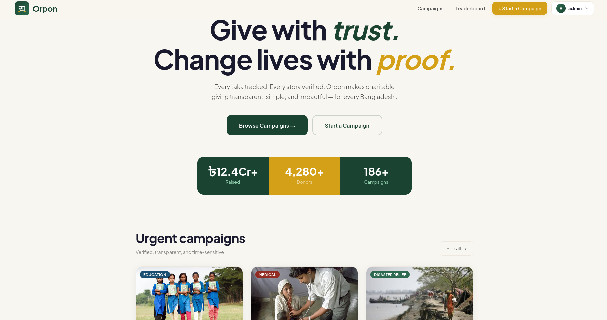
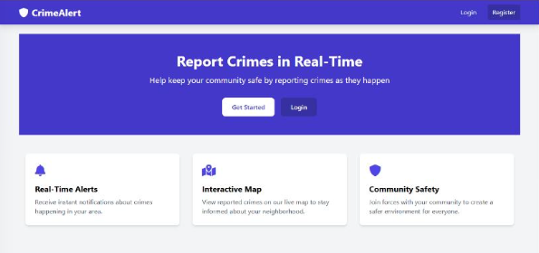
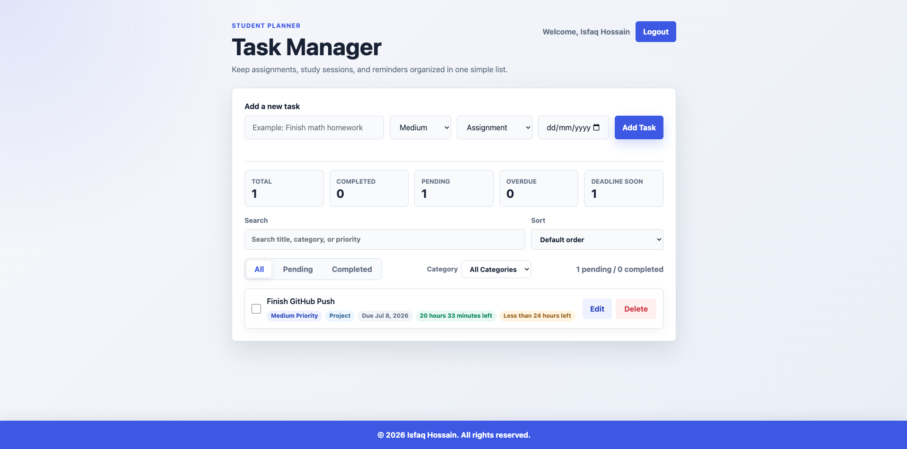
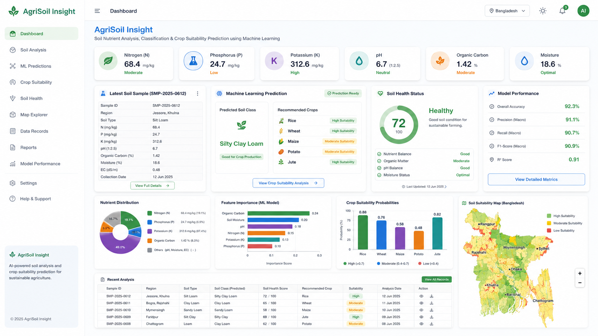

Working knowledge
Personal Portfolio
Hello — I’m Isfaq.
Isfaq Hossain Ibon
CSE Student & Aspiring Web Developer
I build practical web applications and improve my JavaScript, frontend, and full-stack skills through real projects.
Open to opportunities
Internships and junior roles
About me
Building practical skills through real projects.
I am a Computer Science and Engineering student at United International University with a strong interest in web development and software engineering. I enjoy building practical applications, solving problems, and learning through academic and personal projects.
My current goal is to strengthen my JavaScript and full-stack development skills while gaining real-world experience through internships, junior developer roles, and collaborative projects.
My long-term vision is to become a dependable software engineer who can build secure, user-friendly, and meaningful digital products that solve real problems.
Skills & tools
Skills and tools
Skills I use regularly and technologies I’m currently developing through coursework and projects.
Foundational exposure
Programming and Data
Everyday workflow
Tools
How I work
Professional Strengths
Projects
Selected projects
Practical web work, database projects, and academic research—described by their current scope and contribution.

01 — Featured web project
Orpon
A fundraising platform concept designed to make campaign discovery and giving flows easier to understand. I focused on a clear responsive interface, readable campaign information, and a visual system built around trust.
- Problem
- Fundraising information can feel scattered or difficult to evaluate.
- My contribution
- Frontend structure, interface styling, and responsive presentation.
- Current state
- Interface concept shown in the current project materials; no public live demo is claimed.
- Next
- Connect verified campaign data and document the complete feature set.
Repository and live demo are not publicly verified yet.
02 — DBMS project

Crime Alert
A database-driven community reporting project for recording incidents and making local safety information easier to review.
Problem: incident information is often hard to organize and review in one place.
Contribution: database structure and interface work for reports, access, and map-based context.
Next: verify the deployed feature set and publish technical documentation.
03 — Student productivity

Student Task Manager
A student-focused interface for creating work, organizing deadlines, reviewing status, and understanding a simple picture of current tasks.
Problem: coursework and deadlines are easy to lose across separate notes and tools.
Contribution: task flows, status filtering, deadline organization, and dashboard UI.
Next: add authentication and persistent storage; these are planned, not complete.
04 — Machine learning research

Agricultural Soil Nutrient Analysis, Classification and Crop Suitability Prediction
An academic machine-learning project exploring how soil attributes can support classification and crop-suitability analysis.
Problem: soil and crop decisions benefit from clearer analysis of nutrient and classification data.
Contribution: data preprocessing, model evaluation, and research-focused analysis.
Next: publish the final dataset, measured results, and implementation status in a public repository.
05 — Frontend reference
Thikana Frontend Demo
A visual and functional frontend reference used to explore layout, interface behavior, and responsive presentation.
Purpose: practice translating a visual direction into a usable frontend reference.
Contribution: layout implementation, responsive behavior, and interface styling.
Next: document verified interactions when source and demo URLs are available.
Education & growth
Education and growth
My coursework and personal projects have helped me build foundations across software development, databases, algorithms, security, and machine learning.
Present
United International University
Bachelor of Science in Computer Science and Engineering
Building a foundation across computing, software development, and problem-solving through coursework and projects.
- Web Development
- Software Engineering
- Database Systems
- Data Structures & Algorithms
- Machine Learning Fundamentals
- Computer Security
A practical path forward
Where I’m going
-
Now
Strengthening JavaScript, frontend fundamentals, and project quality.
-
Next
Learning backend development, APIs, authentication, and databases.
-
Long term
Growing into a dependable software engineer who can build useful and scalable products.
Resume
A concise view of my education, skills, and work.
Get in touch
Let’s build something useful.
I’m currently open to internships, junior developer opportunities, collaborations, and projects where I can learn, contribute, and grow in a real development environment.
Email me
Location
Dhaka, Bangladesh
Resume
View PDF
↗